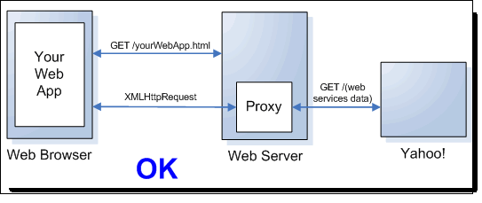

5. JavaScript y el navegador
5.1. AJAX
Uno de los usos más comunes en JavaScript es AJAX (Asynchronous JavaScript And XML), técnica (que no lenguaje) que permite realizar peticiones HTTP al servidor desde JavaScript, y recibir la respuesta sin recargar la página ni cambiar a otra página distinta. La información que se recibe se inserta mediante el API DOM que vimos en la sesión anterior.
| Al igual que al abrir ventanas, el navegador restringe las peticiones al servidor para que sólo se puedan realizar sobre el mismo dominio al que pertenece la página que realiza la petición. Es decir, una página que desarrollamos en localhost no puede hacer una petición a Twitter. |
Para usar AJAX, hemos de emplear el objeto XMLHttpRequest para lanzar una petición HTTP al servidor con el método open(getPost, recurso, esAsync) donde:
-
getPost: cadena con el valorGEToPOSTdependiendo del protocolo deseado -
recurso: URI del recurso que se solicita -
esAsync: booleano dondetrueindica que la petición en asíncrona
Posteriormente se recibe la respuesta mediante la propiedad responseText.
| Aunque en sus inicios era original de IE, posteriormente fue adoptado por todos los navegadores. |
Vamos a dejar de lado IE8 y anteriores que en vez de usar el objeto XMLHttpRequest necesitan crear un objeto ActiveXObject("Microsoft.XMLHTTP"). Para trabajar con AJAX en versiones de navegadores antiguos se recomienda hacerlo mediante jQuery.
|
5.1.1. AJAX síncrono
Para comenzar vamos a basarnos en un ejemplo con llamadas síncronas (sí, parece extraño, es como si usáramos SJAX), ya que el código es un poco más sencillo. El siguiente fragmento realiza una petición a un archivo del servidor fichero.txt, y tras recibirlo, lo muestra mediante un diálogo de alerta.
var xhr = new XMLHttpRequest();
xhr.open("GET","fichero.txt", false); (1)
xhr.send(null); (2)
alert(xhr.responseText); (3)| 1 | Tras crear el objeto, se crea una conexión donde le indicamos el método de acceso (GET o POST), el nombre el recurso al que accedemos (fichero.txt) y finalmente si la llamada es asíncrona (true) o síncrona (false). |
| 2 | Se envía la petición, en este caso sin parámetros (null) |
| 3 | Recuperamos la respuesta con la propiedad responseText. Si el contenido del archivo hubiese estado en formato XML, usaríamos la propiedad responseXML |
A modo de esquema, el siguiente gráfico representa las llamadas realizadas mediante una petición síncrona:
5.1.2. AJAX asíncrono
Al realizar una petición síncrona, AJAX bloquea el navegador y se queda a la espera de la respuesta. Para evitar este bloqueo, usaremos el modo asíncrono. De este modo, tras realizar la petición, el control vuelve al navegador inmediatamente. El problema que tenemos ahora es averiguar si el recurso solicitado ya esta disponible. Para ello, tenemos la propiedad readyState, la cual tenemos que consultar para conocer el estado de la petición. Pero si la consultamos inmediatamente, nos dirá que no ha finalizado. Para evitar tener que crear un bucle infinito de consulta de la propiedad, siguiente el esquema de eventos, usaremos el manejador que ofrece la propiedad onreadystatechange.
var xhr = new XMLHttpRequest();
xhr.open("GET","fichero.txt", true); (1)
xhr.onreadystatechange = function() { (2)
if (xhr.readyState === 4) { (3)
alert(xhr.responseText);
}
};
xhr.send(null);| 1 | Ahora realizamos la petición de manera asíncrona indicándolo con true en el tercer parámetro |
| 2 | Asociamos una función callback al evento de cambio de estado |
| 3 | Comprobamos mediante el estado si la petición ha fallado (1), si ha cargado sólo las cabeceras HTTP (2), si está cargándose (3) o si ya esta completa (4). |
Además de comprobar el estado de la conexión, debemos comprobar el estado de la respuesta HTTP, para averiguar si realmente hemos obtenido la respuesta que solicitábamos. Para ello, la propiedad status
nos devolverá el código correspondiente (200 OK, 304 no ha cambiado desde la última petición, 404 no encontrado).
xhr.onreadystatechange = function() {
if (xhr.readyState === 4) {
var status = xhr.status;
if ((status >= 200 && status < 300) || (status === 304)) {
alert(xhr.responseText);
} else {
alert("Houston, tenemos un problema");
}
}
};A modo de esquema, el siguiente gráfico representa las llamadas realizadas mediante una petición asíncrona:
|
Bucle de Eventos
En la primera sesión comentamos que JavaScript es un lenguaje mono-hilo. ¿Cómo se gestionan las peticiones HTTP asíncronas? Todo el código JavaScript corre en un único hilo, mientras que el código que implementa tareas asíncronas no forma parte de JavaScript y por tanto es libre de ejecutarse en un hilo separado. Una vez la tarea asíncrona finaliza, el callback se sitúa en una cola para devolverle el contenido al hilo principal. Tras añadir el callback a la cola, no hay ninguna garantía de cuanto va a tener que esperar. La cola puede contener sucesos tales como clicks de ratón, teclas pulsadas, respuestas HTTP o cualquier otra tarea asíncrona. El runtime de JavaScript ejecuta un bucle infinito consistente en llevar el primer elemento de la cola, ejecutar el código que lanza el elemento y volver a comprobar la cola. Este ciclo se conoce como el bucle de eventos. Más información en https://thomashunter.name/blog/the-javascript-event-loop-presentation/ |
5.1.3. Enviando datos
Cuando vamos a enviar datos, el primer paso es serializarlos. Para ello, debemos considerar qué datos vamos a enviar, ya sean parejas de variable/valor o ficheros, si vamos a emplear el protocolo GET o POST y el formato de los datos a enviar.
HTML5 introduce el objeto FormData para serializar los datos y convertir la información a multipart/form-data. Se trata de un objeto similar a un mapa, el cual se puede inicializar con un formulario (pasándole al constructor el elemento DOM del formulario) o crearlo en blanco y añadirle valores mediante el método append():
var formDataObj = new FormData();
formDataObj.append('uno', 'JavaScript');
formDataObj.append('dos', 'jQuery');
formDataObj.append('tres', 'HTML5');Más información en https://developer.mozilla.org/es/docs/Web/Guide/Usando_Objetos_FormData
Envío mediante GET
A la hora de hacer el envío, mediante el método send() de la petición le podemos pasar una cadena compuesta por pares de variable=valor, separadas por &, con los valores codificados mediante la función encodeURIComponent:
var valor = "Somos la Ñ";
var datos = "uno=JavaScript&cuatro=" + encodeURIComponent(valor);
// uno=JavaScript&cuatro=Somos%20la%20%C3%91
var xhr = new XMLHttpRequest();
xhr.open("GET", "fichero.txt", true);
// resto de código AJAX
xhr.send(datos);Envío mediante POST
Para poder enviar datos con POST, a la hora de abrir la conexión le indicaremos el método de envío mediante xhr.setRequestHeader(
'Content-Type', 'application/x-www-form-urlencoded') o el tipo de contenido deseado (multipart/form-data, text/xml, application/json, …).
Tras esto, al enviar la petición los datos como una cadena o mediante un objeto FormData.
var xhr = new XMLHttpRequest();
xhr.open("POST","fichero.txt", true); (1)
xhr.setRequestHeader("Content-Type","application/x-www-form-urlencoded"); (2)
// Resto de código AJAX
xhr.send("heroe=Batman"); (3)| 1 | Primer parámetro a POST |
| 2 | Indicamos el tipo de contenido que envía el formulario |
| 3 | Le adjuntamos datos de envío como una cadena, o un objeto FormData |
5.1.4. Eventos
Toda petición AJAX lanza una serie de eventos conforme se realiza y completa la comunicación, ya sea al descargar datos del servidor como al enviarlos. Los eventos que podemos gestionar y el motivo de su lanzamiento son:
-
loadstart: se lanza al iniciarse la petición -
progress: se lanza múltiples veces conforme se transfiere la información -
load: al completarse la transferencia -
error: se produce un error -
abort: el usuario cancela la petición
Todos estos eventos se tienen que añadir antes de abrir la petición.
var xhr = new XMLHttpRequest();
xhr.addEventListener('loadstart', onLoadStart, false);
xhr.addEventListener('progress', onProgress, false);
xhr.addEventListener('load', onLoad, false);
xhr.addEventListener('error', onError, false);
xhr.addEventListener('abort', onAbort, false);
xhr.open('GET', 'http://www.omdbapi.com/?s=batman');
function onLoadStart(evt) {
console.log('Iniciando la petición');
}
function onProgress(evt) {
var porcentajeActual = (evt.loaded / evt.total) * 100; (1)
console.log(porcentajeActual);
}
function onLoad(evt) {
console.log('Transferencia completada');
}
function onError(evt) {
console.error('Error durante la transferenciaº');
}
function onAbort(evt) {
console.error('El usuario ha cancelado la petición');
}| 1 | Mediante las propiedades loaded y total del evento, podemos obtener el porcentaje del archivo descargado. |
5.1.5. Respuesta HTTP
Si el tipo de datos obtenido de una petición no es una cadena, podemos indicarlo mediante el atributo responseType, el cual puede contener los siguientes valores: text, arraybuffer, document (para documentos XML o HTML), blob o json.
var xhr = new XMLHttpRequest();
xhr.open('GET', 'http://expertojava.ua.es/experto/publico/imagenes/logo-completo.png', true);
xhr.responseType = 'blob'; (1)
xhr.addEventListener('load', finDescarga, false);
xhr.send();
function finDescarga(evt) {
if (this.status == 200) {
var blob = new Blob([this.response], {type: 'img/png'});
document.getElementById("datos").src = blob;
}
}| 1 | Indicamos que el tipo de la imagen es un blob |
5.2. JSON
Tal como vimos en el módulo de Servicios REST, JSON es un formato de texto que almacena datos reconocibles como objetos por JavaScript. Pese a que AJAX nació de la mano de XML como el formato idóneo de intercambio de datos, JSON se ha convertido en el estándar de facto para el intercambio de datos entre navegador y servidor, ya que se trata de un formato más eficiente y con una sintaxis de acceso a las propiedades más sencilla.
Supongamos que tenemos un archivo de texto (heroes.json) con información representada en JSON:
{
"nombre": "Batman",
"email": "batman@heroes.com",
"gadgets": ["batmovil","batarang"],
"amigos": [
{ "nombre": "Robin", "email": "robin@heroes.com"},
{ "nombre": "Cat Woman", "email": "catwoman@heroes.com"}
]
}Si queremos recuperarla mediante AJAX, una vez recuperada la información del servidor, desde ES5 podemos usar el objeto JSON para interactuar con el texto. Este objeto ofrece los siguientes métodos:
-
JSON.stringify(objeto)obtiene la representación JSON de un objeto como una cadena, es decir, serializa el objeto, omitiendo todas las funciones, las propiedades con valoresundefinedy propiedades del prototipo. -
JSON.parse(cadena)parsea una cadena JSON en un objeto JavaScript.
var batman = { "nombre": "Batman", "email": "batman@heroes.com" };
var batmanTexto = JSON.stringify(batman);
var batmanOBjeto = JSON.parse(batmanTexto);Así pues, volvamos al código AJAX. Una vez recuperada la información del servidor, la transformamos a un objeto mediante JSON.parse().
var xhr = new XMLHttpRequest();
xhr.open("GET","heroes.json", true);
xhr.onreadystatechange = function() {
if (xhr.readyState === 4) {
var respuesta = JSON.parse(xhr.responseText); (1)
alert(respuesta.nombre); (2)
}
};
xhr.send(null);| 1 | Con el texto recibido, lo deserializamos en un objeto respuesta |
| 2 | Si hiciéramos un alert de resp tendríamos un objeto, por lo que podemos acceder a las propiedades. |
Si quisiéramos enviar datos al servidor en formato JSON, realizaremos una petición POST indicándole como tipo de contenido application/json:
var xhr = new XMLHttpRequest();
xhr.open("POST","fichero.txt", true);
xhr.setRequestHeader("Content-Type","application/json");
xhr.onreadystatechange = function() {
// código del manejador
};
xhr.send(JSON.stringify(objeto));|
eval
Si el navegador no soporta ES5, podemos usar la función El problema de |
5.2.1. Filtrando campos
Al serializar un objeto mediante stringify podemos indicar tanto los campos que queremos incluir como el número de espacios utilizados como sangría del código.
Primero nos centraremos en el filtrado de campos. El segundo parámetro de stringify puede ser:
-
un array con los campos que se incluirán al serializar
-
una función que recibe una clave y una propiedad, y que permite modificar el comportamiento de la operación. Si para un campo devuelve
undefineddicho campo no se serializará.
var heroe = {
nombre: "Batman",
email: "batman@heroes.com",
gadgets: ["batmovil", "batarang"],
amigos: [
{ nombre: "Robin", email: "robin@heroes.com"},
{ nombre: "Cat Woman", email: "catwoman@heroes.com"}
]
};
var nomEmail = JSON.stringify(heroe, ["nombre", "email"]);
var joker = JSON.stringify(heroe, function (clave, valor) {
switch (clave) {
case "nombre":
return "Joker";
case "email":
return "joker_" + valor;
case "gadgets":
return valor.join(" y ");
default:
return valor;
}
});
console.log(nomEmail); // {"nombre":"Batman","email":"batman@heroes.com"}
console.log(joker); // {"nombre":"Joker","email":"joker_batman@heroes.com","gadgets":"batmovil y batarang","amigos":[{"nombre":"Joker","email":"joker_robin@heroes.com"},{"nombre":"Joker","email":"joker_catwoman@heroes.com"}]}En el caso de querer indentar el código, con el tercer parámetro le indicamos con un número (entre 1 y 10) la cantidad de espacios utilizados como sangría, y en el caso de pasarle un carácter, será el elemento utilizado como separador.
console.log(JSON.stringify(heroe, ["nombre", "email"]));
console.log(JSON.stringify(heroe, ["nombre", "email"], 4));
console.log(JSON.stringify(heroe, ["nombre", "email"], "<->"));5.2.2. Ejemplo OMDB
Una vez que sabemos como parsear una respuesta JSON, vamos a mostrar un ejemplo completo de una petición AJAX al servidor de OMDB para obtener los datos de una película. Al realizar una petición de búsqueda con http://www.omdbapi.com/?s=batman, en OMDB, obtendremos una respuesta tal que así:
{"Search":[
{"Title":"Batman Begins","Year":"2005","imdbID":"tt0372784","Type":"movie","Poster":"http://ia.media-imdb.com/images/M/MV5BNTM3OTc0MzM2OV5BMl5BanBnXkFtZTYwNzUwMTI3._V1_SX300.jpg"},
{"Title":"Batman","Year":"1989","imdbID":"tt0096895","Type":"movie","Poster":"http://ia.media-imdb.com/images/M/MV5BMTYwNjAyODIyMF5BMl5BanBnXkFtZTYwNDMwMDk2._V1_SX300.jpg"},
{"Title":"Batman Returns","Year":"1992","imdbID":"tt0103776","Type":"movie","Poster":"http://ia.media-imdb.com/images/M/MV5BODM2OTc0Njg2OF5BMl5BanBnXkFtZTgwMDA4NjQxMTE@._V1_SX300.jpg"},
...
]}Por lo tanto, para mostrar el título y el año de las peliculas encontradas haremos:
var xhr = new XMLHttpRequest();
xhr.open('GET', 'http://www.omdbapi.com/?s=batman', 'true');
xhr.onreadystatechange = function() {
if (xhr.readyState === 4) {
mostrarPelicula(xhr.responseText); (1)
}
};
xhr.send(null);
function mostrarPelicula(datos) {
var o = JSON.parse(datos); (2)
var pelis = o.Search;
for (numPeli in pelis) {
console.log(pelis[numPeli].Title + " - " + pelis[numPeli].Year);
}
}| 1 | Una vez recibida la respuesta, desacoplamos la petición del tratamiento de la respuesta |
| 2 | Transformamos los datos recibidos como JSON en un objeto para facilitar su manejo |
5.2.3. Cross-Domain
Sabemos que el navegador funciona como sandbox y restringe las peticiones AJAX, de modo que sólo permite realizar peticiones a recursos que se encuentren en el mismo dominio.
Esta restricción de conoce como Same-Origin Policy, y para ello las peticiones tienen que compartir protocolo, servidor y puerto. Esta política también fija que desde un dominio A se puede realizar una petición a un dominio B, pero no se puede obtener ninguna información de la petición hacia B, ni la respuesta ni siquiera el código de respuesta.
El uso de cross-domain AJAX permite romper esta política bajo ciertas circunstancias, dependiendo de la técnica utilizada:
-
Proxy en el servidor: creamos un servicio en nuestro servidor que retransmita la petición al host al que queremos llegar. Como las peticiones desde el lado del servidor no están restringidas, no habrá ningún problema.
Figure 4. Proxy en el Servidor -
CORS (Cross-Origin Resource Sharing): Si el servidor al que le haces la petición la permite (enviando la cabecera
Access-Control-Allow-Origin), el navegador también dejará que se realice. Para ello, los servidores tienen que especificar que permiten peticiones de otros dominios.Access-Control-Allow-Credentials: trueAdemás, en el código del cliente, hemos de comprobar si la conexión se ha realizado con credenciales (el objeto
XMLHttpRequestcontiene la propiedadwithCredentialsatrue):var xhr = new XMLHttpRequest(); if ("withCredentials" in xhr) { // CORS Habilitado }La realidad es que pocos dominios permiten su uso (algunos son http://bit.ly o http://twitpic.com).
Si queremos evitarnos configurar el servidor con la cabecera, podemos hacer uso de http://www.corsproxy.com, el cual fusiona tanto la técnica CORS como el uso de un proxy.
Un artículo muy completo sobre el uso de CORS: http://www.html5rocks.com/en/tutorials/cors -
JSONP (JSON with Padding): Las restricciones de seguridad no se aplican a la etiqueta
<script>. Con ella podemos cargar (¡y ejecutar!) código JavaScript de cualquier origen mediante una petición GET, con lo que podríamos cargar en un punto del documento la respuesta del servidor en formato JSON.
5.2.4. JSONP
Estudiemos en más detalle esta técnica. Supongamos que realizamos la siguiente petición:
<script src="http://www.omdbapi.com/?s=batman"></script>Esto no sirve de mucho, ya que sólo inserta en ese punto del documento el objeto en formato JSON, pero no hace nada con esa información.
Lo que JSONP permite es definir una función (que es nuestra) y que recibirá como parámetro el JSON que envía el servidor. Los servicios que admiten JSONP reciben un parámetro en la petición, (normalmente llamado callback) que especifica el nombre de la función a llamar.
http://www.omdbapi.com/?s=batman?callback=miFuncionEl servidor nos devolverá un JavaScript del estilo:
miFuncion(respuestaEnJSON);Es decir, tras la llamada, se ejecutará miFuncion recibiendo como argumento el JSON. En miFuncion procesaríamos los datos y los mostraríamos en la página.
Si queremos que la petición se realice al producirse un evento, hemos de crear la etiqueta <script> de manera dinámica:
<body>
<script>
function llamarServicio() {
var s = document.createElement("script");
s.src = "http://www.omdbapi.com/?s=batman?callback=miFuncion";
document.body.appendChild(s);
}
function miFuncion(json) {
document.getElementById("resultado").innerHTML = JSON.stringify(json);
}
</script>
<input type="button" onclick="llamarServicio()" value="JSONP">
<div id="resultado"></div>
</body>Esta técnica se restringe a peticiones GET, con lo que si queremos hacer otro tipo de petición (POST, PUT o DELETE), no podremos usar JSONP. Además, requiere que el servidor sea de confianza, ya que el servicio podría devolver código malicioso que se ejecutará en el contexto de nuestra página (lo que le da acceso a las cookies, almacenamiento local, etc…). Para reducir los riesgos se pueden usar frames y window.postMessage para aislar las peticiones JSONP.
Trabajaremos más ejemplos de AJAX mediante jQuery en siguientes sesiones, el cual facilita mucho el acceso a contenido remoto desde el cliente.
| Podemos consultar un ejemplo completo de JSONP con código jQuery en el cliente y Java en el servidor en http://www.mysamplecode.com/2012/05/jquery-cross-domain-ajax-request.html |
5.2.5. Testing
En la unidad anterior ya vimos como hacer pruebas de código asíncrono mediante QUnit. Veamos un ejemplo que pruebe código AJAX:
QUnit.asyncTest('ajaxHeroes', function (assert) {
expect(2); (1)
var xhr = new XMLHttpRequest();
xhr.open("GET","heroes.json", true);
xhr.onreadystatechange = function() {
if (xhr.readyState === 4) {
var respuesta = JSON.parse(xhr.responseText);
assert.equal(respuesta.nombre, "Batman", "Atributo de archivo json");
assert.equal(respuesta.amigos[0].nombre, "Robin", "Atributo de un hijo que es array");
QUnit.start(); (2)
}
};
xhr.send(null);
});| 1 | Le indicamos a la prueba que vamos a realizar dos aserciones |
| 2 | Una vez indicadas las aserciones, le indicamos a QUnit que lance la petición AJAX |
5.3. HTML 5
Las principales características que ofrece HTML 5 y que se están incorporando a los navegadores de manera progresiva son:
-
Soporte de vídeo, mediante
<video>(operaciones.play(),.pause(),currentTime = 0; eventoended,play,pause, …) -
Soporte de audio
-
Elemento
canvaspara la generación de gráficos en 2D, similar a SVG. -
Almacenamiento local y/o offline, mediante el objeto
localStorageque estudiaremos más adelante. -
Nuevos elementos de formulario, como tipos
email,date,number, … -
Arrastrar y soltar (Drag-and-drop)
-
Geolocalización
La implementación de cada una de estas prestaciones viene determinada por el navegador y la versión empleada. Si queremos consultar alguna característica concreta, podemos comprobar en http://caniuse.com que navegadores la soportan.
Cada una de las características vistas anteriormente (vídeo, audio, geolocalización) tienen sus métodos y eventos propios, que se salen del alcance del módulo.
En cuanto a JavaScript, la única característica que viene de la mano de ECMAScript 5 es la selección de elementos mediante la clase CSS, mediante el método getElementsByClassName(claseCSS):
var c1 = document.getElementsByClassName("clase1")
var c12 = document.getElementsByClassName("clase1 clase2");5.3.1. Detección de características. Modernizr
Si a nivel programativo queremos averiguar si el navegador que empleamos soporta una determinada característica para así emplearla, necesitamos realizar una detección de la misma:
if (document.getElementsByClassName) {
// existe, por lo que el navegador lo soporta
} else {
// no existe, con lo que el navegador no lo soporta
}|
Detección del navegador
Hace años se programaba detectando el navegador con el que se conectaba el usuario: Este tipo de desarrollo es muy peligroso, por las continuas actualizaciones del navegador y el costoso mantenimiento del código. Es mucho mejor detectar la característica en la que estamos interesados o usar un framework como jQuery para implementar código cross-browser. |
Para ayudarnos a detectar las características que ofrece nuestro navegador, podemos usar la famosa librería Modernizr (http://www.modernizr.com). Esta librería ofrece el objeto Modernizr que contiene propiedades booleanas con las prestaciones soportadas, por ejemplo, Modernizr.video o Modernizr.localStorage. Así pues, una vez incluida la librería, para detectar si el navegador soporta la etiqueta video de HTML5 haríamos:
if (Modernizr.video) {
// usamos el vídeo de HTML5
} else {
// usamos el vídeo Flash
}5.3.2. Polyfills
Si nuestro navegador no soporta la característica deseada, podemos usar HTML shims o polyfills que reproducen la funcionalidad del navegador.
Un shim es una librería que ofrece una nueva API a un entorno antiguo mediante los medios que ofrece el entorno.
Un polyfill es un fragmento de código (o plugin) que ofrece la tecnología que esperamos que el navegador ofrezca de manera nativa. Con lo que un polyfill es un shim para el API del navegador.
Lo que nosotros haremos es comprobar mediante Modernizr si el navegador soporta un API, y en caso negativo, cargar un polyfill.
Por ejemplo, si nuestra aplicación tiene que soportar navegadores antiguos, podemos usar el polyfill html5shiv (https://github.com/aFarkas/html5shiv):
<!--[if lt IE 9]>
<script src="html5shiv.js"></script>
<![endif]-->Si estamos interesados en una funcionalidad concreta de HTML5, en la página de Modernizr tienen un catálogo extenso de polyfills: https://github.com/Modernizr/Modernizr/wiki/HTML5-Cross-Browser-Polyfills
En http://html5please.com tenemos un listado de las características de HTML y su estado, con recomendaciones de polyfills e implementaciones para facilitar la decisión de usar o no dichas características.
5.4. Almacenando información
Una manera de almacenar información en el navegador es mediante cookies, aunque su gestión mediante JavaScript sea muy laboriosa.
| Todos los almacenes que vamos a estudiar a continuación se pueden visualizar dentro de las DevTools en la pestaña Resources. |
5.4.1. Cookies
Para almacenar una cookie podemos acceder a la propiedad document.cookie asignándole un valor o consultándola para recuperar el valor almacenado.
document.cookie = "nombre=Batman";
var info = document.cookie;
document.cookie = "amigo=Robin"; (1)| 1 | crea la cookie para amigo, sin eliminar la de nombre |
Por defecto las cookies se eliminan al cerrar el navegador. Si queremos que no sea así, podemos indicar su fecha de expiración mediante el atributo expires:
document.cookie = "nombre=Batman; expires=Thu Dec 31 2015 00:00:00 GMT+0100 (CET)";Para eliminar una cookie hay que poner el atributo expires con una fecha del pasado y no pasarle ningún valor:
document.cookie = "nombre=; expires=Thu Jan 01 1970 00:00:00 GMT+0100 (CET)";Más ejemplos en https://developer.mozilla.org/en-US/docs/Web/API/document.cookie
La principal ventaja de usar cookies es que tanto el servidor con Java (o cualquier otro lenguaje) como el navegador mediante JavaScript pueden acceder a la información almacenada.
Pero también tiene sus inconvenientes, ya que:
-
sólo pueden almacenar hasta 4KB (normalmente guardan una clave hash que identifica la vista)
-
se envían y vuelven a recibir con cada petición
-
caducan
5.4.2. LocalStorage
En cambio, si nos centramos en LocalStorage, sólo podemos usarlo mediante JavaScript, aunque como veremos a continuación, su uso es muy sencillo y potente:
-
puede almacenar entre 5 y 10 MB
-
la información almacenada no se envía al servidor con cada petición
-
no caduca
El almacenamiento local aparece de la mano de HTML5 y se basa en un mapa de claves/valor donde podemos almacenar todo el contenido que deseemos. Para ello, hemos de usar el objeto global localStorage y asociarle valores a sus propiedades. También podemos usar los métodos .setItem(clave) y .getItem(clave) para acceder a las propiedades de manera dinámica.
Las propiedades son sensibles a las mayúsculas, con lo que .nombre y .Nombre son propiedades distintas.
|
localStorage.nombre = "Aitor";
localStorage.setItem("apellido1","Medrano");
console.log(localStorage.nombre);
console.log(localStorage.getItem("apellido1"));
MDN recomienda usar los métodos getItem y setItem en vez del uso de las propiedades
|
Si queremos comprobar o modificar lo que hay en almacenado en el almacén del navegador, podemos abrir las Dev-Tools y acceder a la pestaña Resources:
Si en algún momento queremos saber cuantos elementos tenemos almacenados, podemos usar la propiedad length
console.log(localStorage.length); // 2Si queremos eliminar una propiedad, usaremos el método removeItem(clave).
localStorage.removeItem(apellido1);
console.log(localStorage.getItem("apellido1")); // undefinedFinalmente, si queremos limpiar el almacenamiento local, podemos hacer un clear().
localStorage.clear();
console.log(localStorage.getItem("nombre")); // undefined
En los navegadores Safari, Safari iOS y Android, al usar la navegación privada, no se permite el uso de localStorage. En el resto, al salir de la navegación privada, la base de datos se vacía.
|
Cabe destacar que los datos se almacenan todos como cadenas, ya que antes de almacenar se ejecuta el método .toString por lo que si insertamos un dato como número, deberemos volver al parsearlo al recuperarlo del almacenamiento.
localStorage.edad = 35;
console.log(typeof localStorage.getItem("edad")); // "string"
var edad = parseInt(localStorage.getItem("edad"), 10);Almacenando un objeto
Si lo que queremos almacenar es un objeto, realmente se almacenará una cadena indicando que se trata de un objeto.
var persona = {
nombre : "Aitor",
apellido1 : "Medrano",
edad : 35
};
localStorage.setItem("persona", persona);
console.log(localStorage.getItem("persona")); // [object Object]Para solucionar esto, lo mejor es usar las librerías JSON que acabamos de estudiar para crear una representación del objeto mediante JSON.stringify(objeto) y posteriormente recuperarlo con JSON.parse(objetoLS).
var persona = {
nombre : "Aitor",
apellido1 : "Medrano",
edad : 18
};
localStorage.setItem("persona", JSON.stringify(persona));
console.log(localStorage.getItem("persona")); // "{\"nombre\":\"Aitor\", \"apellido1\":\"Medrano\", \"edad\":18}"
var personaRecuperada = JSON.parse(localStorage.getItem("persona"));
console.log(personaRecuperada); /* [object Object] {
apellido1: "Medrano",
edad: 18,
nombre: "Aitor"
} */El uso del almacenamiento local sigue el planteamiento de sandbox, con lo que queda restringido su uso al dominio activo, con lo que no podremos acceder a propiedades del almacenamiento local creadas desde un dominio distinto.
5.4.3. SessionStorage
De manera similar a localStorage, podemos usar el objeto sessionStorage para almacenar la información con un ciclo de vida asociado a la sesión del navegador. Es decir, al cerrar el navegador, el almacenamiento se vaciará.
Un caso partícular es que se produzca un cierre inesperado por fallo del navegador. En dicho caso, los datos se restablecen como si no hubiésemos cerrado la sesión.
Ambos objetos heredan del interfaz Storage por lo que el código de uso es similar.
5.4.4. IndexedDB
Además del almacenamiento local, el navegador permite almacenar la información en una estructura más compleja similar a una BBDD.
Existen 2 posibilidades:
-
WebSQL DB: wrapper sobre SQLite que permite interactuar con lo datos mediante un interfaz SQL, con lo que podemos ejecutar sentencias select, insert, update o delete. El problema viene de que al tratarse de un estándar, y no haber más de una implementación, la especificación se ha congelado y ha pasado a un estado de deprecated. En la actualidad la soportan la mayor parte de los navegadores excepto Firefox e IE (ver http://caniuse.com/#feat=sql-storage).
-
IndexedDB: expone un API como un almacén de objetos, el cual comparte muchos conceptos con una BBDD SQL, tales como base de datos, registro, campo o transacción. La principal diferencia es que no se interactúa mediante el lenguaje SQL, sino que se utilizan métodos del mismo modo que se hace mediante JPA o Hibernate. Su soporte es completo en Firefox, Chrome y Opera, pero parcial en el resto (http://caniuse.com/#search=IndexedDB)
| Un artículo muy interesante donde comparan con código estos enfoques es Client-Side Storage: http://www.html5rocks.com/en/tutorials/offline/storage/ |
5.5. Web Workers
El modelo mono-hilo de JavaScript provoca que el desarrollador utilice las llamadas asíncronas AJAX y los timers mediante setTimeout() y setInterval() como triquiñuelas para no bloquear el hilo de ejecución, por ejemplo, mediante la manipulación del DOM, la cual es quizás la tarea más costosa que podemos realizar con JavaScript.
HTML5 introduce los Web Workers como una solución a la ejecución mono-hilo de JavaScript. De este modo, vamos a poder crear hilos de ejecución que se ejecutan en background que corren al mismo tiempo (más o menos) y que pueden llegar a aprovechar las arquitecturas multi-núcleo que ofrece el hardware.
Al crear un web worker, éste correrá en background mientras que el hilo principal procesa los eventos del interfaz de usuario, incluso si el hilo del worker esta ocupado procesando gran cantidad de datos. Por ejemplo, un worker puede procesar una estructura JSON para extraer la información útil a mostrar en el interfaz de usuario.
5.5.1. Hilo padre
El código que pertenece a un web worker reside en un archivo JavaScript aparte. El hilo padre crea el nuevo worker indicando la URI del script en el constructor de Worker, el cual lo carga de manera asíncrona y lo ejecuta.
// archivo JS padre
var worker = new Worker("otroFichero.js"); (1)| 1 | Creamos un web worker en el hijo padre que referencia al código que reside en otroFichero.js |
Para lanzar el worker, el hilo padre le envía un mensaje al hijo mediante el método postMessage(mensaje):
worker.postMessage("contenido");La página padre puede comunicarse con los workers mediante el API postMessage, el cual también se envía para que los workers envíen mensajes al padre. Además de poder enviar datos de tipos primitivos (cadena, número, booleano, null o undefined), podemos enviar estructuras JSON mediante arrays y objetos. Lo que no se puede enviar son funciones ya que pueden contener referencias al DOM.
Los hilos del padre y de los workers tienen su propio espacio en memoria, con lo que los mensajes enviados desde y hacia se pasan por copia, no por referencia, con lo cual se realiza un proceso de serialización y deserialización de la información. Por este motivo, se desaconseja enviar grandes cantidades de información al worker.
Además de enviar información, el padre puede registrar un callback que quede a la espera de recibir un mensaje una vez que el worker haya finalizado su trabajo. Este permite al hilo del padre utilizar la respuesta del hijo, como por ejemplo, modificar el DOM con la información procesada por el worker.
worker.onmessage = function(evt) { (1)
console.log("El worker me ha contestado!");
console.log("Y me ha enviado " + evt.data); (2)
};| 1 | También podemos registrar el evento mediante worker.addEventListener('message', function(evt) { |
| 2 | El objeto evt contiene la información de la respuesta |
El callback recibe como parámetro un objeto evt, el cual contiene las propiedades:
-
target: identifica al worker que envió el mensaje, por lo que se usa cuando tener un entorno con múltiples workers -
data: contiene el mensaje enviado por el worker de vuelta a su padre
En resumen, el código del padre será:
var worker = new Worker("otroFichero.js");
worker.onmessage = function(evt) { (1)
console.log("El worker me ha contestado!");
console.log("Y me ha enviado " + evt.data);
};
worker.postMessage("contenido");5.5.2. Worker hijo
El worker en sí se coloca en un archivo .js aparte, que en el ejemplo anterior hemos nombrado como otroFichero.js.
Por ejemplo, en su ejemplo más sencillo si queremos que devuelva el mensaje recibido y le salude haríamos:
self.addEventListener('message', function(evt) { (1)
var mensaje = evt.data; (2)
self.postMessage("Hola " + mensaje); (3)
});| 1 | El worker también registra un manejador de evento para los mensajes que recibe de su padre. Este manejador también se podía haber añadido mediante la propiedad onmessage |
| 2 | De manera similar al padre, extraemos la información a partir de la propiedad data |
| 3 | Para volver a enviar un mensaje al padre también utiliza el método postMessage. |
En el contexto de un worker, tanto self como this referencian al alcance global.
5.5.3. Finalizando los workers
Los workers consumen muchos recursos, ya que son hilos a nivel de sistema operativo. Por lo tanto, no conviene crear un gran número de hilos y deberíamos terminar el web worker una vez ha finalizado su trabajo.
| Aunque es común tener múltiples hilos workers para dividir el trabajo entre ellos, hay que ir con mucho cuidado, ya que tienen un gran coste de rendimiento al arrancar y consumen mucha memoria por cada instancia. |
Para que un worker termine por sí mismo y deseche cualquier tarea pendiente usaremos el método close:
self.close();O si un padre quiere finalizar a un worker hijo mediante el método terminate:
worker.terminate();5.5.4. Seguridad y restricciones
Como los web workers trabajan de manera independiente del hilo de interfaz del navegador, dentro de un worker no tenemos acceso a muchos objetos JavaScript como document, window (variables globales), console, parent ni, el más importante, al DOM.
El hecho de no tener acceso al DOM y no poder modificar la página puede parecer muy restrictivo, pero es una importante decisión sobre la seguridad. ¿Qué podría pasar si múltiples hilos intentaran modificar el mismo elemento? Por ello los web workers funcionan en un entorno restringido y de mono-hilo.
Dicho esto, podemos usar los workers para procesar datos y devolver el resultado al hilo principal, el cual sí que puede modificar el DOM. Aunque tiene reducido el número de objetos que pueden usar, desde un worker si que tenemos acceso a algunas funciones como setTimeout()/clearTimeout(), setInterval()/clearInterval(), navigator, etc… También podemos usar los objetos XMLHttpRequest y localStorage dentro de un worker, e incluso importar otros workers.
Ya hemos comentado que en su contexto, tanto self como this referencian al alcance global.
Otra restricción de los web workers es que siguen la política de Same-Origin Policy. Por ejemplo, un script hospedado en http://www.ejemplo.com no puede acceder a otro en https://www.ejemplo.com. Incluso con nombres de dominio idénticos, la política fuerza que el protocolo sea el mismo. Esto no suele ser un problema ya que suelen residir en el mismo dominio, siempre es bueno recordarlo.
|
Carga de archivos
Dentro de un worker podemos cargar otros archivos JavaScript mediante |
5.5.5. Gestión de errores
Al no tener acceso a la consola, el proceso de depuración y gestión de errores se complica un poco. Por suerte, las Dev-Tools nos permiten depurar el código del worker como si se tratase de cualquier otro código JavaScript
Para gestionar los errores lanzados por un web workers, el padre puede asignar un manejador de eventos sobre el evento error, el cual propaga un objeto ErrorEvent, el cual se desglosa en tres propiedades:
-
filename: nombre del script que provocó el error. -
lineno: línea del error. -
message: descripción del error.
Por ejemplo, en el código de padre podemos añadir el evento de la siguiente manera:
worker.addEventListener('error', function(error){
console.log('Error provocado por el worker: ' + error.filename
+ ' en la linea: ' + error.lineno
+ ' con el mensaje: ' + error.message);
});5.5.6. Casos de uso
Ya hemos comentado que los web workers no están pensados para usarse en grandes cantidades debido a su alto coste de inicio y el gran coste de memoria por instancia.
Un caso de uso real puede ser cuando tenemos que trabajar con una librería de terceros con un API síncrona que provoca que el hilo principal tenga que esperar al resultado antes de continuar con la siguiente sentencia. En este caso, podemos delegar la tarea a un nuevo worker para beneficiarnos de la capacidad asíncrona.
También funcionan muy bien en situaciones de checkeo (polling) continuo a un destino en background y envío de mensaje al hilo principal cuando llega algún dato.
Si necesitamos procesar una gran cantidad de información devuelta por el servidor, es mejor crear varios workers para procesar los datos en porciones que no se solapen.
Finalmente, también se emplea para analizar fuentes de video o audio con la ayuda de múltiples web workers, cada uno trabajando en una parte predefinida del problema
Aunque se trate de una tecnología que no esta completamente implantada, en un futuro abrirá nuevas posibilidades una vez los navegadores la implementes y ofrezcan herramientas de depuración.
5.5.7. Shared workers
La especificación de HTML5 define dos tipos de workers, los dedicados y los compartidos (shared). Los dedicados son los que hemos estudiado, ya que existe una relación directa entre el creador del worker y el propio worker mediante una relación 1:1.
En cambio, un shared worker puede compartirse entre todas las páginas de un mismo origen, por ejemplo, todas las páginas o scripts de un mismo dominio pueden comunicarse con un único shared worker.
| Hay que tener en cuenta que a día de hoy ni Internet Explorer ni Safari los soportan, estando disponibles únicamente en Firefox, Chrome y Opera (http://caniuse.com/#feat=sharedworkers). |
La principal diferencia en el modo de usar los workers compartidos es que se asocian a un puerto mediante la propiedad port, para mantener el contacto con el script padre que accede a ellos.
Para crear un worker compartido le pasaremos la URL del script o el nombre del worker al constructor de SharedWorker.
var sharedWorker = new SharedWorker('otroScript.js');
sharedWorker.port.onmessage = function(evt) {
// recibimos los datos del hijo compartido
}
sharedWorker.port.start(); (1)
sharedWorker.port.postMessage('datos que queremos enviar');| 1 | Antes de poder enviar mensajes, necesitamos arrancar el puerto mediante el método start() |
De manera similar, un worker puede escuchar el evento connect, el cual se lanza cuando un nuevo cliente intenta conectarse al worker. Una vez conectado, sobre el puerto activo, añadiremos un manejador sobre el evento message, dentro del cual normalmente contestaremos al hilo padre:
self.onconnect = function(evento) {
var clientePuerto = event.source; (1)
clientePuerto.onmessage = function(evento) { (2)
var datos = evento.data; (3)
// ... procesamos los datos
clientePuerto.postMessage('datos de respuesta'); (4)
}
clientePuerto.start(); (5)
};| 1 | evento.source contiene la referencia al puerto del cliente |
| 2 | escucha cualquier mensaje enviado por este cliente |
| 3 | evento.data contiene el mensaje enviado por el cliente |
| 4 | tras procesar los datos, se envía la respuesta al padre |
| 5 | tras asignar el manejador, le indicamos al puerto que ya estamos listos para escuchar y enviar mensajes mediante el método start(). |
Un caso de uso de los shared workers es que, debido a su naturaleza compartida, permite mantener el mismo estado en diferentes pestañas de la misma aplicación, ya que las páginas utilizan el mismo script de worker compartido para mantener e informar del estado.
5.6. WebSockets
Una de las características más novedosas de HTML5 son los WebSockets, los cuales permiten comunicar un cliente con el servidor sin necesidad de peticiones AJAX.
Así pues, son una técnica de comunicación bidireccional sobre un socket TCP, un tipo de tecnología PUSH.
| En el módulo de Componentes Web ya estudiamos como trabajar con WebSockets, pero desde el punto de vista del servidor mediante Servlets. Ahora vamos a centrarnos en el lado del cliente. |
Para utilizar WebSockets necesitamos crear un objeto WebSocket, el cual automáticamente abrirá un conexión temporal al servidor.
Su constructor recibe un parámetro con la URL que vamos a conectar y otro opcional con información sobre los protocolos a emplear:
var ejemploWS = new WebSocket("ws://www.ejemplo.com/servidorSockets", "json"); (1)| 1 | los esquemas URL ws y wss referencias a conexiones con websockets y websockets seguros, respectivamente |
| No podemos usar WebSockets entre contextos seguros y no seguros, ya que se mantiene Same-Origin Policy, con lo que no podemos abrir una conexión no segura desde una página cargada mediante HTTPS o viceversa. |
Una vez creada la conexión, podemos consultar el estado de la misma mediante la propiedad status, cuyos valores pueden ser:
-
0: conectando -
1: abierto -
2: cerrado
Una vez conectados, ya podemos enviar datos al servidor mediante el método send() cada vez que queramos enviar un mensaje:
ejemploWS.send("Texto para el servidor");Los datos que podemos enviar son del tipo String (en UTF8), Blob o ArrayBuffer
Cuando hayamos finalizado la conexión WebSocket, llamaremos al método close() del objeto WebSocket:
ejemploWS.close();Antes de cerrar la conexión puede ser necesario comprobar el valor del atributo bufferedAmount para verificar que se ha transmitido toda la información.
5.6.1. Eventos
Al tratarse de una conexión asíncrona, no hay garantía de poder llamar al método send() inmediatamente después de haber creado el objeto WebSocket.
Por ello, todos los mecanismos de comunicación y gestión de la conexión se realizan mediante eventos.
Para enviar información, previamente hemos de asegurarnos que la conexión se ha abierto exitosamente mediante el evento onopen:
ejemploWS.onopen = function (evt) {
ejemploWS.send("Texto para el servidor");
};Para tratar la respuesta del servidor hay que utilizar el evento onmessage el cual saltará al recibir un mensaje:
ejemploWS.onmessage = function (evt) {
console.log(evt.data); (1)
};| 1 | Para extraer la información del mensaje, hay que acceder a la propiedad data del objeto recibido. |
Finalmente, para comprobar si ha sucedido algún error, le asignaremos un manejador al evento onerror:
ejemploWS.onerror = function (evt) {
console.log("Error:" + evt);
};Los casos de uso principales de los WebSockets se centran en:
-
Actualización en tiempo real en las aplicaciones de redes sociales
-
Juegos multi-jugador mediante HTML5
-
Aplicaciones de chat online
5.6.2. Ejemplo chat
Si ahora revisamos el código de la sala de chat que vimos en el módulo de Componentes Web, podemos comprobar como se creaba la conexión y la manera en que gestionábamos los eventos de los mensajes recibidos:
var websocket;
function connect(nick, sala) {
if (sala == undefined) {
websocket = new WebSocket("ws://localhost:8080/cweb-chat/ChatWS");
} else {
websocket = new WebSocket("ws://localhost:8080/cweb-chat/ChatWS/" + sala + "?nick=" + nick);
}
websocket.onmessage = onMessage; (1)
websocket.onopen = onOpen;
}
function onOpen(event) {
document.getElementById("chat").style.display = 'block';
document.getElementById("login").style.display = 'none';
}
function onMessage(event) {
items = event.data.split(";"); (2)
document.getElementById("mensajes").innerHTML = "<p><strong><" + items[0] + "></strong> " + items[1] + "</p>" + document.getElementById("mensajes").innerHTML;
}
function send(texto) {
websocket.send(texto);
}
// Eliminar esta linea para implementar nick y sala
window.addEventListener("load", connect, false);| 1 | Asociamos las funciones a los eventos de mensaje y apertura de la conexión |
| 2 | Al recibir un mensaje, separa los datos por el carácter ; |
5.7. Rendimiento
Un elemento a tener en cuenta desde el mismo momento que empezar a codificar es el rendimiento.
5.7.1. Identificar los problemas
Antes de optimizar cualquier código, debemos averiguar que parte es la que provoca los cuellos de botella o que funcionan lentamente.
Para ello, podemos hacer uso de:
-
Herramientas de Profiling: Las Dev-Tools incluyen este tipo de herramientas, las cuales podemos usar desde:
-
el botón/pestaña de Profile
-
la consola, mediante las funciones
profile()yprofileEnd() -
el código de aplicación, mediante
console.profile()yconsole.profileEnd()Más información sobre el profiler CPU en https://developer.chrome.com/devtools/docs/cpu-profiling o sobre el profiler de pila en https://developer.chrome.com/devtools/docs/heap-profiling
-
-
Timers manuales: en el código de aplicación, mediante
console.time()yconsole.timeEnd() -
Herramientas de Análisis de peticiones, por ejemplo, mediante las DevTools y la pestaña Network, donde podemos visualizar todos los recursos (
.html,.js,.css, imágenes, etc..) que utiliza nuestra página, con su tipo y tamaño, los detalles de las respuestas del servidor, o un timeline con las peticiones de red.
Para ello, primero hemos de abrir la pestaña Network de las Dev-Tools y posteriormente acceder al recurso que queremos analizar. Por ejemplo, si accedemos a la web del experto http://expertojava.ua.es/ obtendremos el siguiente análisis:
Del gráfico podemos deducir que pese a que los recursos que más ocupan son las librerías y hojas de estilo de Bootstrap y jQuery las cuales se cachean en posteriores visitas. Si volvemos a cargar la página tendremos que el tiempo de carga de las librerías es 0 y se obtienen desde la caché del navegador:
Podemos observar como el recurso publico de tipo html tiene un código de estado 304, lo que indica que este recurso ya se ha descargado previamente y que no ha sido modificado desde entonces, y por ello se han descargado 123 B en vez de 3,9 KB, es decir, la cabecera HTTP del recurso.
Si comprobamos la barra de estado inferior podemos ver como hemos pasado de 227KB a 123B de información transferida, y de 381ms a 246ms. Además, el tiempo necesario para la carga de la página y del DOM también se ha reducido.
| Si queremos que el navegador realice una carga completa de la página ignorando los recursos cacheado, podemos usar CTRL + F5 o SHIFT + botón de actualizar. |
Más información sobre el análisis de la red en https://developer.chrome.com/devtools/docs/network
5.7.2. Reglas
Una serie de reglas a tomar dentro de JavaScript son:
-
Minificar el código (eliminado espacios y comentarios) para reducir el tamaño de los archivos, mediante herramientas como:
-
Google Closure Compiler (https://developers.google.com/closure/compiler/)
-
YUI Compressor (http://yui.github.io/yuicompressor/)
-
UglifyJS2 (https://github.com/mishoo/UglifyJS2) Relacionado con la minificación está la ofuscación, la cual además de eliminar contenido innecesario, renombra las variables y funciones, lo que a su vez también reduce todavía más el tamaño del código. Aunque es conveniente tener en cuenta que minificar es menos arriesgado.
-
-
Reducir el número de archivos JavaScript que contiene nuestra página, ya que el navegador tiene un número determinado de peticiones simultaneas que puede realizar. Para ello, podemos combinar nuestras librerías en una sola, por ejemplo, mediante Google Closure Compiler en http://closure-compiler.appspot.com/home. Se recomienda tres tipos de enlace a las librerías JavaScript:
-
mediante CDN a las librerías famosas (jQuery, Bootstrap, ..)
-
dejar a solas la librería de nuestra aplicación, ya que si la modificamos cada semana no tenemos que estar combinándola con las librerías de terceros
-
combinar el resto de librerías de terceros.
-
-
Comprobar la calidad del código mediante herramientas de validación como:
-
JSLint (http://jslint.com)
-
JSHint (http://jshint.com)
-
-
Colocar los enlaces a las hojas de estilo antes de los archivos JavaScript, para que la página se renderice antes.
-
Colocar los enlaces a código JavaScript al final de la página, para que primero se cargue todo el contenido DOM, o realizar la carga de la librería JavaScript de manera asíncrona incluyendo el atributo
async:<script src="miLibreriaJS.js" async></script> -
Utilizar funciones con nombre en vez de anónimas, para que aparezcan en el Profiler
-
Aislar las llamadas AJAX y HTTP para centrarse en el código JavaScript. Para ello, es conveniente crear objetos mock que eviten el tráfico de red.
-
Dominar la herramienta Profiler que usemos en nuestro entorno de trabajo.
También podemos instalar el plugin de Google Chrome denominado PageSpeed o acceder la web del proyecto (https://developers.google.com/speed/pagespeed/) donde podemos indicarle qué página queremos analizar. Por ejemplo, si probamos con http://expertojava.ua.es tendremos el siguiente resultado:
Además de Google, el equipo de Yahoo tiene un artículo imprescindible donde explica el conjunto de reglas (https://developer.yahoo.com/performance/rules.html) que siguen ellos para evaluar el rendimiento de una aplicación web y el plugin YSlow (http://yslow.org/) para cualquier navegador que evalúa estas reglas.
5.8. Ejercicios
5.8.1. (0.6 ptos) Ejercicio 51. Star Wars
Vamos a crear una aplicación que muestre información sobre Star Wars. Para ello, vamos a utilizar el API REST que ofrece 'The Star Wars API' en http://swapi.co, la cual permite su acceso mediante CORS (sin necesidad de usar JSONP).
Para ello, al cargar la página, vamos a mostrar un listado con las películas de Star Wars.
Al pulsar sobre el título de una película, se mostrará la sinopsis de la misma y un listado con un máximo de 10 personajes que aparecen en la misma.
Para ello, nos basaremos en la siguiente página:
<!DOCTYPE html>
<html>
<head>
<title>Ejercicio 51</title>
<meta charset="utf-8" />
</head>
<body>
<h1>Star War API</h1>
<h2>Películas - <span id="total"></span></h2>
<ul id="peliculas"></ul>
<h2>Sinopsis</h2>
<div id="sinopsis"></div>
<h2>Personajes</h2>
<ul id="personajes"></ul>
<script src="ej51.js"></script>
</body>
</html>Y haciendo uso de AJAX y JSON, obtendremos un resultado similar al siguiente:
Todo el código JavaScript se almacenará en una archivo denominado ej51.js:
5.8.2. (0.5 ptos) Ejercicio 52. Almacén
Supongamos que tenemos un formulario de registro acceso a una aplicación con el usuario:
<!DOCTYPE html>
<html>
<head>
<title>Ejercicio 52</title>
<meta charset="utf-8" />
</head>
<body>
<form id="miForm">
Usuario: <input type="text" name="usuario" id="inputUsuario" /><br/>
<input type="submit" id="btnSubmit" value="Enviar" />
</form>
Visitas usuario: <span id="visitas"></span> <br />
Total visitas: <span id="total"></span>
<script src="ej52.js"></script>
</body>
</html>Tras introducir los datos del usuario, las capas de visitas y total se actualizarán automáticamente con el número de visitas del usuario y con el total de visitas realizadas desde el navegador, independientemente del usuario rellenado.
Para ello, guardar en el almacén local:
-
una entrada con el total de visitas
-
una entrada por cada usuario para contar el número de visitas
Todo el código JavaScript se almacenará en una archivo denominado ej52.js:
5.8.3. (0.5 ptos) Ejercicio 53. Web Workers
A partir del API de Star Wars, vamos a crear una aplicación que nos indique cuantos elementos contiene cada una de las categorías.
Para ello, mediante http://swapi.co/api/ obtendremos un objeto JSON con las propiedades y las URLs de los recursos disponibles.
Para cada uno de estos recursos, hemos de crear un Web Worker que realice la petición AJAX y obtenga el número de elementos que contiene, es decir, cada uno de los hijos realizará una petición REST a una categoría. Una vez obtenido el resultado, devolverá el número de elementos de dicha categoría al padre.
La plantilla HTML será similar a la siguiente:
<!DOCTYPE html>
<html>
<head lang="es">
<meta charset="UTF-8">
<title>Ejercicio 53</title>
</head>
<body>
<h1>Star War API - Workers</h1>
<h2>Elementos - <span id="total"></span></h2>
<ul id="elementos"></ul>
<script src="ej53.js"></script>
</body>
</html>Y el resultado a la siguiente imagen:
Todo el código JavaScript se almacenará en:
-
un archivo denominado
ej53.js, con el código necesario para obtener las categorías y sus urls, y la creación y comunicación con el web worker. -
un archivo denominado
ej53worker.js, con el código necesario para obtener la cantidad de elementos de una determinada categoría/url.